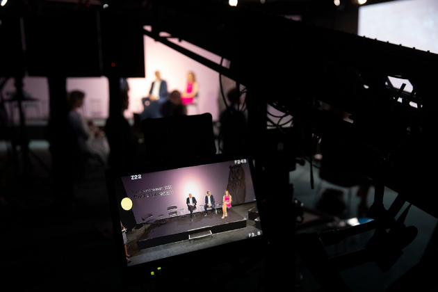
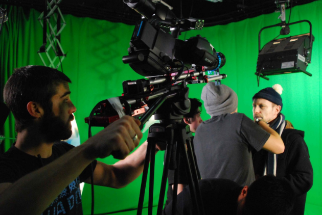

Cinema, Televisão e Novos Media
Objetivo
/ Cinema, Televisão e Novos Media
PROGRAMA DE ESTUDOS


O Mestrado em Produção de Cinema, Televisão e Multimédia permite o aprofundamento das ferramentas metodológicas para o estudo do cinema, televisão e novos media e o aumento de conhecimentos históricos, teóricos, críticos e práticos nos mesmos domínios, também com referência a processos de transposição das competências adquiridas para a forma didática. Desenvolve também elevadas competências no estudo dos fenómenos comunicativos e expressivos do passado e do presente, com particular atenção para as transformações tipológicas e tecnológicas das últimas décadas.
O curso, no âmbito de um projeto de formação unitário, está dividido em dois currículos. O básico inclui ensinamentos relativos à teoria do cinema, metodologias de análise de filmes, história dos estilos e modos de produção de filmes; bem como o desenvolvimento contemporâneo das mídias digitais, narrativas televisivas, artes digitais e formas de comunicação midiática. O outro currículo, de cariz internacional (IMACS: International Master in Audiovisual and Cinema Studies), permite aos alunos a frequência de dois semestres numa universidade estrangeira consorciada, bem como a abordagem das mesmas áreas através do contacto direto com metodologias de ensino e investigação resultados de diferentes países. Para ambos os cursos é possível seguir cursos ministrados em Inglês.